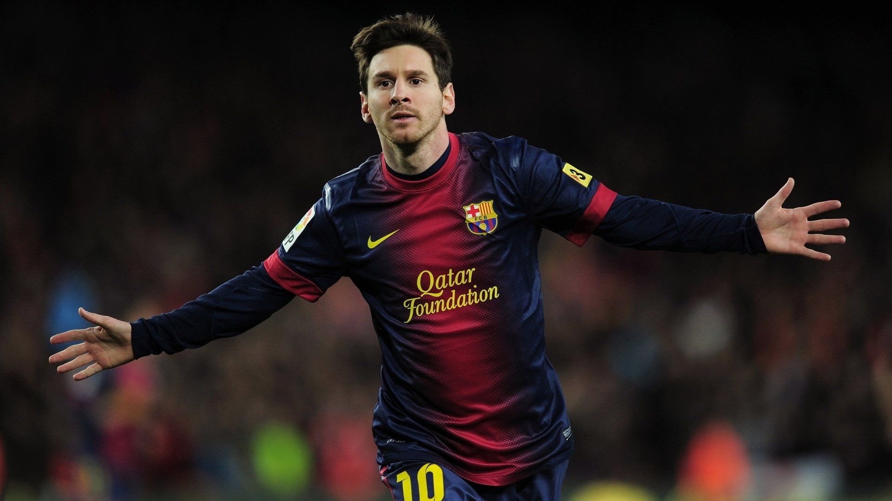
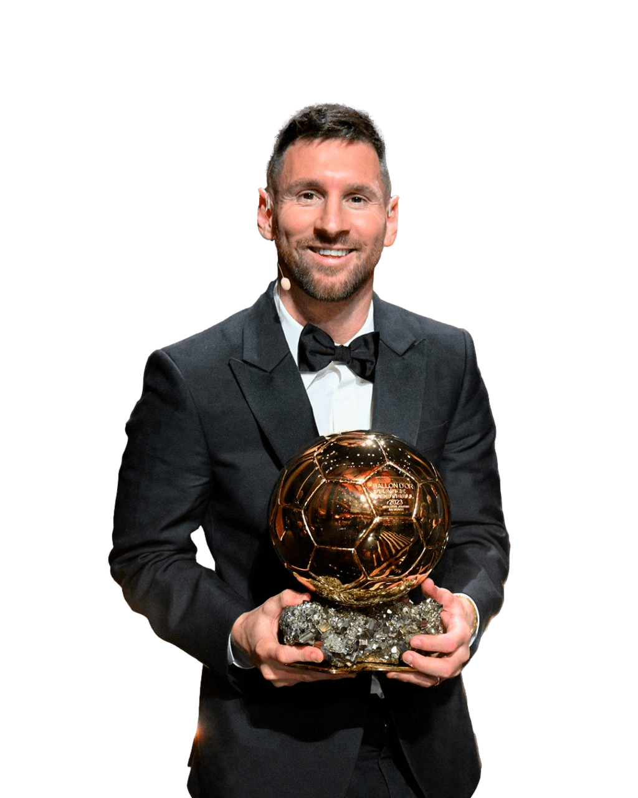
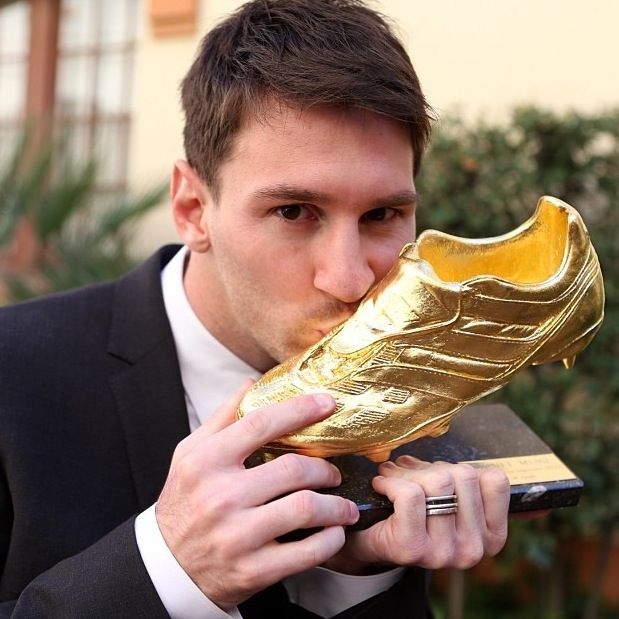
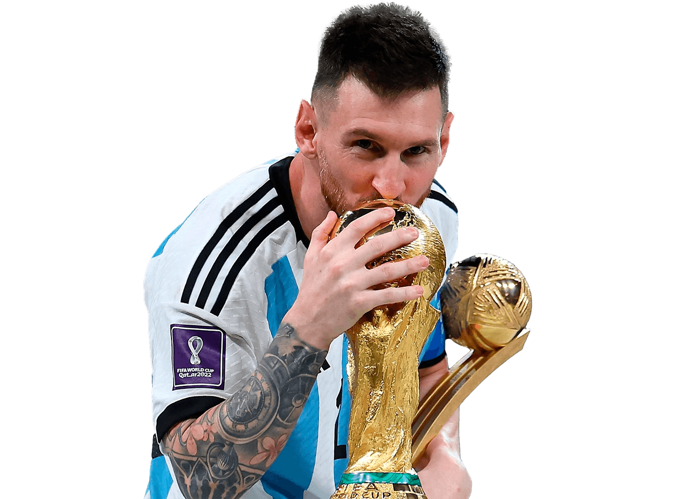

Lionel Andrés Messi Cuccittini es un futbolista argentino, nacido el 24 de junio de 1987 en Rosario, considerado por muchos el mejor jugador de todos los tiempos. Actualmente juega como delantero o centrocampista para el Inter Miami de la Major League Soccer (MLS) y es capitán de la selección de Argentina.


Posee un récord histórico de 8 Balones de Oro, siendo el futbolista que más veces ha obtenido este premio desde su creación en 1956.

Ostenta el récord histórico con 8 Botas de Oro en su carrera, consolidándose como el máximo ganador de este galardón. Su palmarés se desglosa en 6 Botas de Oro de ligas europeas, 1 Bota de Oro de la MLS y 1 Bota de Oro del Mundial Sub-20.

En su carrera mundialista, Messi ganó el título en Qatar 2022 y fue subcampeón en Brasil 2014 y Estados Unidos, México y Canadá 2026. Acumuló 34 partidos jugados, 21 goles (convirtiéndose en el máximo goleador histórico del torneo, superando a Miroslav Klose) y 12 asistencias (igualando el récord de Pelé).
"Nunca sabemos el valor de un momento hasta que se convierte en recuerdo"
Inicia sesion para ver a Messi en accion